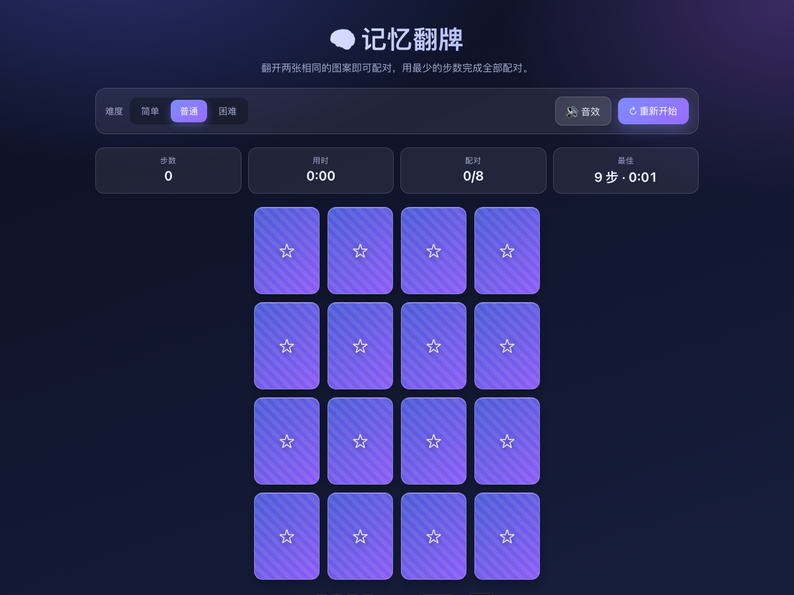
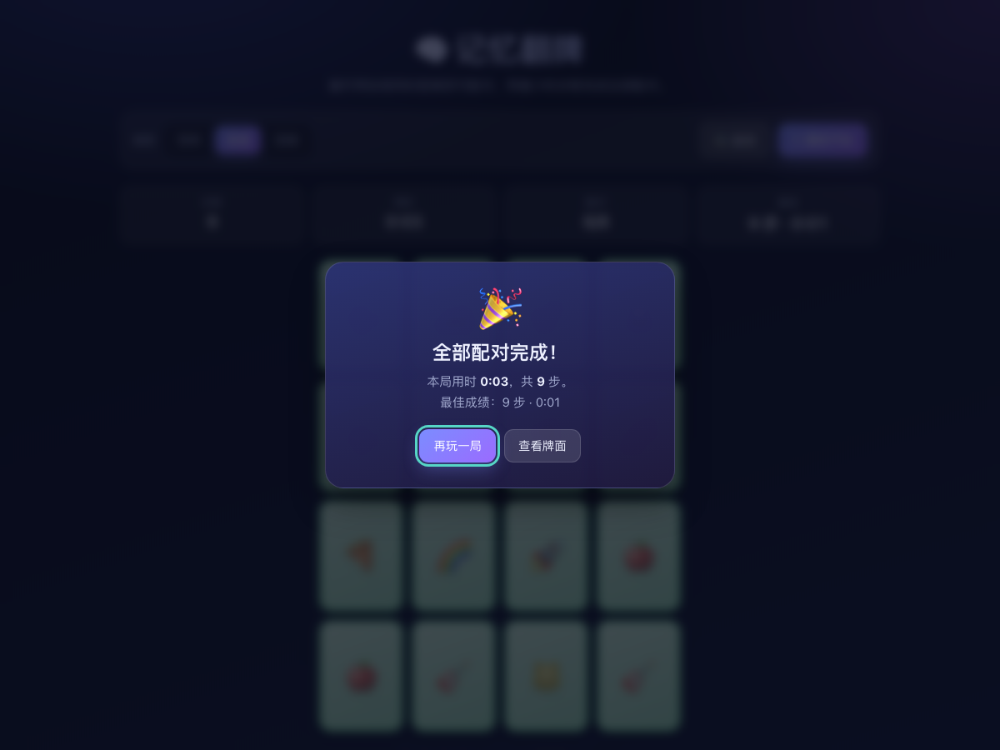
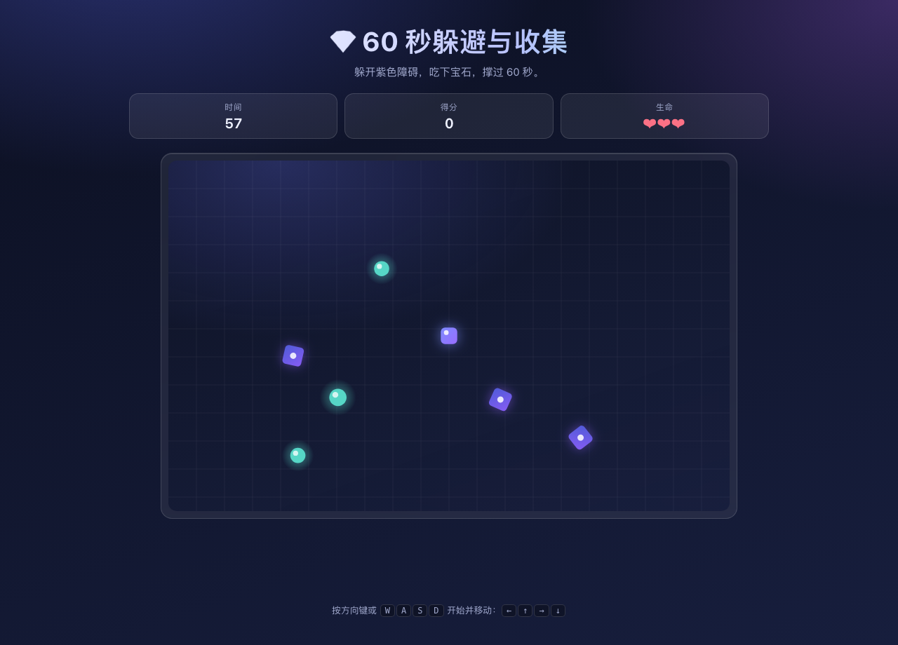
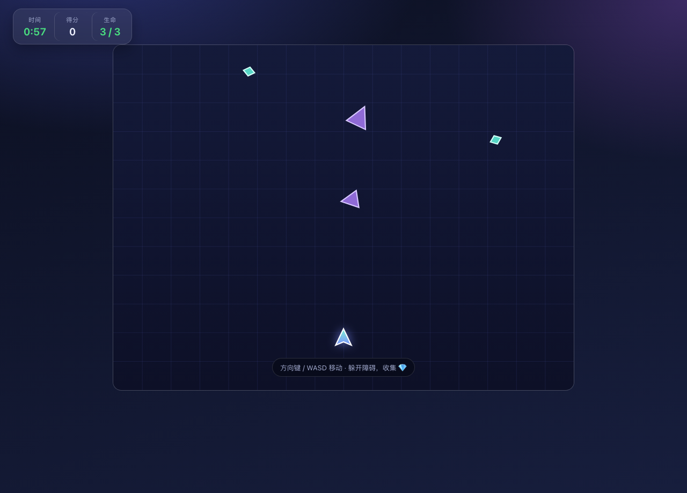
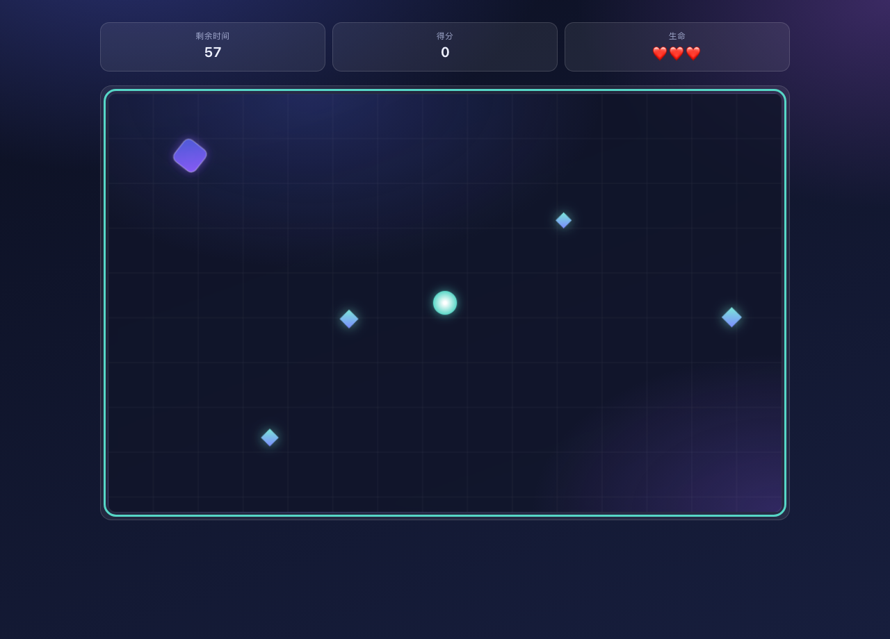

3.3 演示取段 返回讲述页
任务 A · 紫色参考作品 
开局附件 
结算附件 源码中的主题变量 /* ============================================================
记忆翻牌 · Memory Match —— 样式表
============================================================ */
:root {
--bg-0: #0c1022;
--bg-1: #171e3d;
--panel: rgba(255, 255, 255, 0.07);
--panel-strong: rgba(255, 255, 255, 0.12);
--border: rgba(255, 255, 255, 0.14);
--text: #eef1ff;
--text-dim: #a3abcf;
--accent: #7c8cff;
--accent-2: #56d6c6;
--good: #4ade80;
--bad: #fb7185;
--card-back-a: #4b5bd6;
--card-back-b: #8b5cf6;
--radius: 16px;
--shadow: 0 18px 40px rgba(0, 0, 0, 0.35);
} 原始生成会话未成功落盘。原稿来自工具写入参数。
任务 A 与 B · 三份实际正文 原版 ---
name: purple-game-ui
description: Build or restyle small browser games with the "purple glass" house style — deep indigo/violet gradient backdrop, frosted-glass panels, gradient pill buttons, 3D flip cards, WebAudio sound effects, localStorage best-score persistence, and a centered win/lose overlay. Use when the user asks for a mini-game, a web game, a puzzle/quiz/match game, or to apply the purple 紫色 UI style to an existing game or to a new game in this workspace. Not for native/mobile app UIs, non-game dashboards, or games needing a real backend.
---
# Purple Game UI (紫色玻璃风格)
House style distilled from the reference game **记忆翻牌 · Memory Match** (see
\`source-game/\` in the workspace). Use it for any self-contained browser mini-game:
vanilla HTML/CSS/JS, ES modules, no build step, no external assets or fonts.
## Workflow
1. **Copy the scaffold.** Copy \`assets/\` into the target game folder and rename as
needed (\`index.html\`, \`styles.css\`, \`src/\`). \`assets/styles.css\` is the theme
layer (variables + shared components: toolbar, buttons, stat tiles, overlay,
card, segmented control). \`assets/src/storage.js\`, \`assets/src/sound.js\` and
\`assets/src/ui.js\` are drop-in utilities; \`assets/src/game-core.js\` and
\`assets/src/main.js\` are templates to replace.
2. **Keep the theme file intact.** Only add game-specific CSS in a separate
\`game.css\` (or a clearly marked section) and never edit the \`:root\` variables
— they are the style contract. Read \`references/style-guide.md\` for the token
table, component recipes, and the do/don't list.
3. **Fill the four-zone shell.** Every game uses the same layout order:
header (emoji + gradient title + one-line subtitle) → toolbar (difficulty
segmented control + sound toggle + restart) → stat row (4 tiles) → game board
→ footer hint. Keep the same class names so the style stays consistent.
4. **Implement state/logic in \`src/game-core.js\`.** Keep it pure (no DOM), with a
\`new Game(...)\`, an action method returning a result enum, and a
\`window.<gameName>\` debug handle exposing read-only state (see
\`references/architecture.md\`). \`src/main.js\` only renders state and translates
clicks into state changes.
5. **Wire persistence and audio.** Persist settings + best score through
\`storage.js\` (\`loadSettings\`/\`saveSettings\`/\`recordBest\`). Play effects via
\`sound.js\` (\`sfx.flip/match/mismatch/win\`); the toggle button must reflect
\`aria-pressed\` and text (\`🔊 音效\` / \`🔇 静音\`).
6. **Ship the win overlay.** Use the \`.overlay\` markup as-is; on win fill
\`#overlay-emoji\`, \`#overlay-title\`, \`#overlay-text\` (best score line) and wire
再玩一局 / 关闭 buttons. \`overlay-again\` must receive focus when opened;
\`overlay-close\` must return focus to the restart button; Esc closes.
7. **Verify.** Open the page, play to completion, and check: no console errors,
flip/match/wrong animations look right, the overlay traps focus, sound toggle
works, best score survives reload, and the layout holds at 375px and 1280px
widths. \`prefers-reduced-motion\` must already be honored by the theme CSS.
## Non-negotiables
- No external images, fonts, CDNs, or audio files — emoji/SVG glyphs and
WebAudio synthesis only.
- Purple-on-dark palette only; accent \`#7c8cff\`, secondary \`#56d6c6\`.
- Every interactive element is a real \`<button>\` with an accessible name;
visible focus ring (3px \`--accent-2\`) is mandatory.
- Timers and pending transitions must be cleared on restart to avoid leaks.
- Chinese UI copy by default; keep one short instructional subtitle.
## Files
- \`assets/\` — copyable scaffold (see \`references/architecture.md\` for the file map).
- \`references/style-guide.md\` — tokens, component recipes, animation rules, pitfalls.
- \`references/architecture.md\` — module layout, state/event contract, checklist.
修订版 ---
name: purple-game-ui
description: 紫色玻璃风格的 UI 组件包 —— 按需取用 HUD、场地、结算、控件、反馈、浮层等独立片段，用来搭建网页小游戏的界面骨架。适用：新做浏览器小游戏、给现有小游戏换界面、做 HUD/结算面板/关卡选择界面。整页模板与旧玩法示例见 examples/。不适用于原生 App、非游戏后台、需要真实后端的项目。
---
# Purple Game UI · 紫色玻璃组件包
一套**按需取用**的紫色主题组件。不是一个整页模板，而是**零件盒**：先按玩法定下
HUD、场地、结算三块骨架，再从组件目录里挑真正用得上的片段拼进去。
主题底色（深靛紫渐变 + 磨砂玻璃 + 青紫强调色）保持不变；旧版整页壳与旧玩法
（点击高亮格子）保留在 `examples/` 里作参考，不作为默认起点。
## 组件目录
| 文件 | 片段 | 什么时候用 |
|---|---|---|
| `components/theme.css` | 变量 / 重置 / 页面底色 / 玻璃基座 / 焦点环 | **必选**，所有片段的依赖 |
| `components/hud.css` | 常驻 HUD 簇、数据格、目标条、小标签 | 场上实时要盯的信息（生命/分数/波次） |
| `components/playfield.css` | 网格棋盘、格子按钮、3D 翻牌、canvas 舞台 | 游戏主场地 |
| `components/result.css` | 模态结算面板、行内结算条 | 局末结算、通关/失败 |
| `components/controls.css` | 按钮、分段控件、开关、图标键、工具条 | 开局前设置、重开、暂停 |
| `components/feedback.css` | 吐司、漂浮数字、命中/受击闪光、连击槽、通用关键帧 | 即时反馈，避免常驻面板 |
| `components/overlays.css` | 抽屉、遮罩、暂停面板 | 任务说明、图鉴、控制表等长文本 |
需要"一个文件"时用 `components/bundle.css`（全部片段拼接版）。
## 新项目怎么用
### 1. 先定三件事，别先画界面
按这个顺序回答，写下来再动手：
1. **HUD** —— 玩家每一秒都要盯的，是什么？（通常 2–4 个：生命 / 分数 / 计时 / 进度）
→ 决定 `hud.css` 里放哪几个 `.stat`，其余信息进抽屉。
2. **场地** —— 玩家操作的对象长什么样？（网格 / 翻牌 / canvas 舞台）
→ 决定 `playfield.css` 用 `.playfield__grid` + `.tile` / `.card` 还是 `.stage`。
3. **结算** —— 一局结束时，玩家需要看到什么？（总分 / 命中率 / 最佳纪录 / 下一关入口）
→ 决定 `result.css` 用模态 `.result` 还是行内 `.result-bar`。
三件套定完，才决定要不要 `controls.css`（设置类玩法）、`feedback.css`（动作类玩法）、
`overlays.css`（长文本）。
### 2. 拷贝你需要的片段
把 `components/` 里选中的 `.css` 拷进项目（`theme.css` 必选），或直接引用
`components/bundle.css`。片段之间只靠 CSS 变量协作，可以任意组合、顺序不限。
片段用到的类名写在 `references/component-catalog.md` 里，带最小标记示例。
### 3. 骨架长这样
~~~html
<link rel="stylesheet" href="./components/theme.css">
<link rel="stylesheet" href="./components/hud.css">
<link rel="stylesheet" href="./components/playfield.css">
<link rel="stylesheet" href="./components/result.css">
<div class="hud">
<div class="hud__cluster">…数据格…</div>
<div class="hud__aside">…暂停/状态…</div>
</div>
<main class="playfield">
<div class="playfield__grid" style="--cols:4; --rows:4"></div>
</main>
<div class="result" id="result" hidden>…结算面板…</div>
~~~
完整可跑的版本见 `examples/full-page/`（整页 + 旧玩法）与
`examples/minimal/`（只有 HUD/场地/结算的空骨架，新项目从这里起步）。
### 4. 再接玩法逻辑
- 逻辑与界面分开：规则放纯 JS 模块（无 DOM、无定时器），渲染放 `main.js`。
- 结算面板沿用 `result.css` 的标记，`.result` 打开时：`role="dialog" aria-modal="true"`，
焦点移入、Tab 锁在面板内、Esc 关闭、关闭后焦点回到触发按钮。
- 音效用 `examples/full-page/src/sound.js`（WebAudio 现场合成，无外部音频文件）。
- 最佳成绩用 `examples/full-page/src/storage.js`（localStorage，隐私模式自动降级）。
## 排版与可玩性规则（来自 game-ui-frontend）
- **先定视觉方向再写代码**：题材、材料语言、字体、配色、动效调性。
- **一个主 HUD 簇，最多一个小次级簇**；中心与下中部场地保持干净。
- **长文本收进抽屉**（`overlays.css`），不要做成常驻方框。
- **用瞬时提示代替常驻说明**（`feedback.css` 的吐司）。
- **浮层要能压在动效上读**：加背板、描边、对比和克制的模糊。
- **桌面与移动同时设计**：片段都用 `clamp()` 尺寸，375px 不塌。
- **3D 场景**：菜单/对话框激活时暂停相机与指针输入（`body.is-paused` 已提供钩子）。
详见 `references/layout-planning.md`。
## 硬性要求
- 不用任何外部图片、字体、CDN、音频文件；只用 emoji/SVG 字形 + WebAudio 合成。
- 紫色系深底；强调色 `#7c8cff`，辅助强调 `#56d6c6`。
- 所有可交互元素都是真 `<button>`，有可访问名称，焦点环 3px `--accent-2` 必留。
- 状态不能只靠颜色区分，要同时有边框/形状/文字提示。
- 重开时清掉所有定时器与过渡，避免泄漏。
- `prefers-reduced-motion` 由 `theme.css` 统一降级。
## 文件
~~~text
SKILL.md
components/ # 按需取用的片段（theme.css 必选）
references/
component-catalog.md # 每个片段的类名、依赖、最小标记
layout-planning.md # 界面安排流程（对应 game-ui-frontend）
style-guide.md # 令牌表、动画规则、常见坑
architecture.md # 文件图、状态契约、检查清单
examples/
full-page/ # 整页示例（紫色主题 + 旧玩法：点击高亮格子）
minimal/ # 最小骨架：只有 HUD + 场地 + 结算
~~~
主题指南 ---
name: purple-game-ui
description: 紫色玻璃风格（purple glass）主题指南 —— 深靛紫渐变背景、磨砂玻璃面板、渐变胶囊按钮、3D 翻牌卡片、居中胜负浮层。当用户要做一个小游戏 / 网页游戏 / 拼图问答类游戏，或想把紫色 UI 风格套用到已有或新游戏时使用。主题只规定配色、面板、按钮等视觉语言，页面结构由每个游戏按自己的玩法自行安排。不适用于原生/移动 App、非游戏型后台、需要真实后端的服务。
---
# 紫色玻璃风格 · 主题指南
这是一份**主题指南**，不是脚手架说明书。它回答两件事：
1. 这套紫色玻璃主题长什么样、颜色 / 面板 / 按钮该怎么用（正文主体）；
2. 动手写新游戏时，哪些文件可以照抄、哪些必须按自己的玩法重写。
**核心原则：主题层是契约，页面结构是自由的。**
`assets/styles.css` 里的 `:root` 变量和共享组件属于主题，保持原样；
新游戏自己写 `index.html` 和自己的脚本，界面怎么排由玩法决定 ——
不要把参考模板的整页布局当成必须照抄的骨架。
---
## 一、主题基调
整页是深靛紫夜色，玻璃面板浮在上面，交互件用靛蓝 → 紫的渐变发光。
### 颜色变量（`assets/styles.css` 的 `:root`）
| 变量 | 值 | 用途 |
|---|---|---|
| `--bg-0` / `--bg-1` | `#0c1022` / `#171e3d` | 页面底色渐变的两个端点 |
| `--panel` | `rgba(255,255,255,.07)` | 磨砂面板：工具条、数据格、容器底 |
| `--panel-strong` | `rgba(255,255,255,.12)` | 次级按钮、需要实体感的底色 |
| `--border` | `rgba(255,255,255,.14)` | 1px 发丝描边，所有面板的边线 |
| `--text` | `#eef1ff` | 主文字、关键数值 |
| `--text-dim` | `#a3abcf` | 次要说明、标签、辅助提示 |
| `--accent` | `#7c8cff` | 渐变起点、主按钮、焦点环 |
| `--accent-2` | `#56d6c6` | 渐变终点、焦点描边、成功提示色 |
| `--good` / `--bad` | `#4ade80` / `#fb7185` | 正确 / 命中 与 错误 / 危险 状态 |
| `--card-back-a` / `--card-back-b` | `#4b5bd6` / `#8b5cf6` | 卡背渐变（翻牌类玩法） |
| `--radius` | `16px` | 面板圆角；按钮 11px、数据格 13px、浮层 22px |
| `--shadow` | `0 18px 40px rgba(0,0,0,.35)` | 浮层大面板投影 |
**用色规则**
- 页面只走「深底 + 紫靛蓝主色 + 青绿点缀」这一条色带，不要引入红黄绿等暖色大块。
- 强调色只给**可交互件和状态**用：主按钮、选中项、焦点环、正误反馈；一屏里主按钮不超过一个。
- `--text-dim` 用于一切解释性文字（副标题、标签、提示行），不要用它写正文段落。
- 正误反馈用 `--good` / `--bad`，并且配合图形或文字，不要仅靠颜色区分信息。
- 背景配方（保持不变，这是这套主题的味道来源）：
```css
background:
radial-gradient(1100px 620px at 15% -10%, #2a3170 0%, transparent 55%),
radial-gradient(900px 600px at 100% 0%, #3b2a63 0%, transparent 50%),
linear-gradient(160deg, var(--bg-0), var(--bg-1));
background-attachment: fixed;
```
### 标题
`h1.title` 用渐变文字（白 → 淡紫 → 薄荷青）配合 `background-clip:text; color:transparent`，
emoji 直接写在 `<h1>` 里。副标题一行、20 字以内，用 `--text-dim`。
---
## 二、面板（玻璃层）
玻璃感 = 半透明白底 + 1px 发丝描边 + 背景模糊，三件套一起用才像玻璃：
```css
background: var(--panel);
border: 1px solid var(--border);
border-radius: var(--radius);
backdrop-filter: blur(10px);
-webkit-backdrop-filter: blur(10px); /* 旧 Safari 必须带前缀 */
```
| 层级 | 用法 |
|---|---|
| `--panel` (7%) | 常规面板：工具条、数据格、棋盘外框 |
| `--panel-strong` (12%) | 次级按钮、选中面板等需要「实体感」的底色 |
| `--border` (14%) | 所有面板的 1px 边线，不要加粗、不要换成实色 |
面板层次：底层是背景渐变 → 中层是棋盘 / 画布容器 → 上层是浮层。
浮层（`.overlay`）用 `rgba(6,9,22,.72)` 加 `blur(6px)` 压暗全屏，
内部面板是 165° 渐变 `rgba(42,49,112,.96)→rgba(30,24,60,.96)`、圆角 22px、投影 `--shadow`。
**不要做的事**：不要给面板换成不透明底色（会丢掉玻璃感）；不要叠多层模糊；
不要把卡片的阴影开得比浮层还重，层级会乱。
---
## 三、按钮与控件
所有可交互元素必须是真正的 `<button>`，有可读名称（`aria-label` 或可见文字），
并带 3px `--accent-2` 焦点环（`:focus-visible`，偏移 2px）。
### 主按钮 `.btn.btn--primary`
靛蓝 → 紫渐变 `linear-gradient(140deg, var(--accent), #9a6bff)`，白字，
外发光 `0 8px 20px rgba(124,140,255,.32)`。用于**每屏唯一的那个主行动**
（开始 / 再玩一局 / 确认）。
### 次按钮 `.btn.btn--ghost`
`--panel-strong` 底加 `--border` 边，用于并列的次要行动（音效开关、重新开始、关闭浮层）。
当它是一个「开关」时，`aria-pressed="false"` 会自动变淡并加删除线 —— 静音态就写成这样。
文案随状态切换：`🔊 音效` / `🔇 静音`。
### 分段控件 `.segmented`
深色凹槽 `rgba(0,0,0,.28)`、圆角 11px、内边距 3px；
选中项 `aria-checked="true"` 得到 `linear-gradient(140deg,var(--accent),#9a6bff)` 渐变底、白字、微光。
容器用 `role="radiogroup"`，选项用 `role="radio"` 加 `aria-checked`。
适合难度、模式这类 2–4 项互斥选择。
### 数据格 `.stat`
小卡：标签用 `--text-dim` 0.74rem 居中在上，数值用 tabular-nums 居中在下。
数量按玩法增减，不必凑满四个。
### 按钮手感
`:active` 统一 `translateY(1px) scale(.99)`，主按钮 hover `filter: brightness(1.08)`，
ghost 按钮 hover 底色提到 `rgba(255,255,255,.18)`。按钮文字不换行（`white-space:nowrap`）。
---
## 四、可选组件
- **翻牌卡片** `.card > .card__inner > .card__face`：3D 翻转，`preserve-3d` 加 `backface-visibility:hidden`，
正面 `rotateY(180deg)`，`aspect-ratio:3/4`，卡片 `perspective:900px`、棋盘 `1400px`。
卡背是 45° 白色 8% 斜条纹叠在蓝 → 紫渐变上。
- **格子 / 瓦片** `.tile`：纯渐变块加 `.is-active` 状态，适合消除、扫雷、数字类玩法，不用 3D 翻转。
- **问答选项**：一列 `.btn--ghost` 行，答对加 `.is-correct`（`--good` 描边），答错加 `.is-wrong`（`--bad` 描边）。
- **画布类玩法**：`<canvas>` 外面包一层 `.panel` 容器，继承玻璃质感。
- **键盘提示** `<kbd>`：深色底加 `--border` 边、等宽字体。
- **胜负浮层** `.overlay`：`role="dialog" aria-modal="true"`，打开时焦点移入并锁住 Tab，
Esc 关闭，关闭后焦点回到触发它的按钮。
---
## 五、动效规则
- 翻转：`.card__inner` 上 `transform .45s cubic-bezier(.4,.15,.2,1)`。
- 命中 `pop`（scale 到 1.13）、失误 `shake`（左右抖动）。
- **关键坑**：给翻转卡片做动画时，**每个关键帧都要重复写 `rotateY(180deg)`**，
否则动画过程中卡片会翻回背面。
- 浮层：背景 `fade-in .22s`，面板 `rise .3s cubic-bezier(.2,.9,.3,1.2)`（Y+22px、scale .95 到归位）。
- `@media (prefers-reduced-motion: reduce)` 已把所有时长压到 .001ms，不要绕过它。
---
## 六、写一个新游戏时怎么做
1. **建目录**：新游戏一个文件夹（`index.html` + `styles.css` + `src/`）。
2. **带主题**：把 `assets/styles.css` 原样拷进去当 `styles.css`，**不要改 `:root` 变量**；
玩法特有的样式写在同一文件末尾并加注释分区，或另建 `game.css` 在其后引入。
3. **自己写页面**：**新项目直接写自己的 `index.html`**，按玩法决定布局 ——
棋盘游戏可以是「标题 + 棋盘 + 底部操作条」，问答游戏可以是「题目卡 + 选项列 + 数据侧栏」，
实时游戏可以是「顶部 HUD + 大画布 + 悬浮控制区」。
`assets/template.html` 是**整页参考模板**，用来对照类名与结构节奏，
**不是必须照抄的骨架**，也不要求每个游戏都凑齐「工具条 + 四个数据格」这一套。
4. **自己写逻辑**：自己写状态与渲染。`assets/src/game-core.js` 和 `main.js` 是**示例代码**，
演示「纯逻辑 + 渲染分离」的写法，可以借鉴结构，但要按自己的玩法重写。
5. **可选复用**（与具体游戏无关，可直接拷走、改键名）：
`assets/src/storage.js`（localStorage 封装、`recordBest`）、
`assets/src/sound.js`（WebAudio 合成 `sfx.flip/match/mismatch/win`）、
`assets/src/ui.js`（`formatTime`、焦点陷阱 `trapFocus`、开关文案 `setToggleLabel`）。
6. **交互与存档**：难度 / 音效等设置用 `storage.js` 存（键名换成自己的，schema 变了就加版本号），
最佳成绩按难度分别存。音效开关要同步 `aria-pressed` 和文字。
7. **收尾自查**：走下面清单。
---
## 七、不可协商项
- 不引用外部图片、字体、CDN、音频文件 —— 只用 emoji / SVG 与 WebAudio 合成。
- 只用紫靛蓝配色；强调色 `--accent`，点缀色 `--accent-2`。
- 每个可交互元素都是真 `<button>`，带可访问名称与可见焦点环（3px `--accent-2`）。
- 重新开始时要清掉定时器和未完成的过渡，避免泄漏与串味。
- 中文界面文案；副标题保持一行短句。
- 尺寸用 `clamp(..., vw, ...)`，375px 与 1280px 都要能看；不要写死像素的卡片尺寸。
## 八、自查清单
- [ ] 控制台无报错；`prefers-reduced-motion` 下动画自动关闭
- [ ] 键盘可完整操作：Tab 顺序合理、焦点环可见、浮层内 Tab 被锁、Esc 可关
- [ ] 浮层打开时焦点进入，关闭时焦点回到触发按钮
- [ ] 音效开关同步文案与 `aria-pressed`，静音时确实无声
- [ ] 刷新后设置与最佳成绩仍在（隐私模式下优雅降级为不存档）
- [ ] 375px / 1280px 两种宽度下布局不塌
## 九、文件
| 文件 | 性质 | 说明 |
|---|---|---|
| `assets/styles.css` | **主题层，保持原样** | 变量加共享组件（工具条、按钮、分段控件、数据格、浮层、卡片） |
| `assets/template.html` | **参考** | 整页示例，用来对照类名与节奏；新项目自己写页面 |
| `assets/src/storage.js` | 可复用 | localStorage 封装、`recordBest` |
| `assets/src/sound.js` | 可复用 | WebAudio 合成音效 |
| `assets/src/ui.js` | 可复用 | 时间格式化、焦点陷阱、开关文案 |
| `assets/src/game-core.js` | 示例 | 纯逻辑写法示例，按玩法重写 |
| `assets/src/main.js` | 示例 | 渲染加事件绑定示例，按玩法重写 |
| `references/style-guide.md` | 参考 | token 表、组件配方、动效规则、坑位清单 |
| `references/architecture.md` | 参考 | 文件地图、状态契约、存档 / 音效接口、无障碍清单、玩法配方 |
任务 D · 同状态成品 同一开发 Prompt，三组都从只有对应 Skill 包的目录开始。截图均为开局约 3 秒、满生命、零分。

整页脚手架组 
按需组件包组 
主题指南组，生成会话超时 任务 D · 原版读取、复制和写入 以下摘取成功事件 item_3、item_6、item_9 的相关动作。
/bin/zsh -lc 'cd .agents/skills/purple-game-ui && cat references/architecture.md && echo IDX && cat assets/index.html && echo CSS && cat assets/styles.css'
/bin/zsh -lc 'mkdir -p src && cp .agents/skills/purple-game-ui/assets/src/storage.js .agents/skills/purple-game-ui/assets/src/sound.js .agents/skills/purple-game-ui/assets/src/ui.js src/ && cp .agents/skills/purple-game-ui/assets/styles.css styles.css && ls -R . | head -30'
/bin/zsh -lc "cat > index.html <<'ZZEOF' 项目中的三项统计 <section class="stats stats--play" aria-label="本局数据">
<div class="stat"><span class="stat__label">时间</span><span class="stat__value" id="stat-time">60</span></div>
<div class="stat"><span class="stat__label">得分</span><span class="stat__value" id="stat-score">0</span></div>
<div class="stat"><span class="stat__label">生命</span><span class="stat__value stat__value--lives" id="stat-lives">❤❤❤</span></div>
</section> 任务 D · 组件包读取、复制和引用 以下摘取成功事件 item_2、item_5、item_8 的相关动作。
/bin/zsh -lc "cd .agents/skills/purple-game-ui; cat references/component-catalog.md; echo '=== minimal index ==='; cat examples/minimal/index.html; echo '=== minimal main ==='; cat examples/minimal/src/main.js; echo '=== minimal ui ==='; cat examples/minimal/src/ui.js; echo '=== minimal css ==='; cat examples/minimal/game.css"
/bin/zsh -lc 'mkdir -p components src; cp .agents/skills/purple-game-ui/components/{theme.css,hud.css,playfield.css,result.css,controls.css,feedback.css} components/; ls components; ls -la'
/bin/zsh -lc "cat > index.html << 'EOF' 项目引入的组件样式 <link rel="stylesheet" href="./components/theme.css">
<link rel="stylesheet" href="./components/hud.css">
<link rel="stylesheet" href="./components/playfield.css">
<link rel="stylesheet" href="./components/result.css">
<link rel="stylesheet" href="./components/controls.css">
<link rel="stylesheet" href="./components/feedback.css">
<link rel="stylesheet" href="./game.css"> 主题指南 · 实际修订 Prompt 帮我把这份紫色游戏 Skill 改成一份主题指南。保留原来的紫色主题 CSS，正文写清颜色、面板和按钮怎么用。新游戏按自己的玩法安排界面。把整页模板留作参考，新项目直接写自己的页面。 任务 D · 主题指南读取与采用 会话在自检阶段超时，已落盘页面经浏览器核验可结算、点击重开。
/bin/zsh -lc 'cd .agents/skills/purple-game-ui && wc -l assets/styles.css assets/src/*.js assets/template.html references/*.md && cat assets/styles.css'
/bin/zsh -lc 'cd .agents/skills/purple-game-ui && cat assets/src/storage.js assets/src/ui.js assets/src/sound.js assets/template.html'
/bin/zsh -lc 'mkdir -p src && cp .agents/skills/purple-game-ui/assets/styles.css styles.css && cp .agents/skills/purple-game-ui/assets/src/storage.js src/storage.js && cp .agents/skills/purple-game-ui/assets/src/ui.js src/ui.js && cp .agents/skills/purple-game-ui/assets/src/sound.js src/sound.js && ls src' 项目的游玩布局 .app--game.is-playing .app__header,
.app--game.is-playing .app__footer { display: none; } 任务 D · HUD 的定位 项目中的 hud.css 与 Skill 包中同名文件逐字节一致。
.hud {
position: fixed;
inset-block-start: 0;
inset-inline: 0;
z-index: var(--z-hud);
display: flex;
align-items: flex-start;
justify-content: space-between;
gap: 12px;
padding: clamp(10px, 1.6vw, 16px) var(--gutter);
pointer-events: none; /* 空白区域不拦截点击 */
}
任务 D · 浏览器结算和重开 三组均观察到生命耗尽结算。点击结算内的重开后，比分归零，生命和时间重置。录制现场按实际试玩结果讲述。
整页组 · 正文与页面模板 SKILL.md · 文件头和布局原则 name: purple-game-ui
description: 用「记忆翻牌」小游戏的紫色霓虹视觉风格，为浏览器小游戏搭建可直接套用的页面骨架——标题区、横排 HUD（工具条 + 四个数据卡）、居中场地、结算浮层。当用户要「做一个和之前那个紫色调游戏站一样的小游戏」「复用紫色界面风格」「套用同一个页面布局」时使用。
…
1. **布局是契约，玩法是变量。** 页面自上而下永远是这个顺序：
`标题 → 横向 HUD 工具条 → 四格数据条 → 居中场地 → 底部提示 → 结算浮层`。
换玩法时只允许动「居中场地」内部。 SKILL.md · 快速上手
1. 复制整个 `templates/` 目录到新游戏目录，改名为 `index.html` + `styles.css` + `src/` 即可。
2. 打开 `index.html`，把 `<!-- ===== 场地：唯一需要替换的区域 ===== -->` 标记之间换成你的玩法 DOM。
3. 在你的玩法脚本里 `import { shell } from './shell.js'`，用 `shell` 更新 HUD： templates/index.html · 页面结构摘录 <header class="app__header">
<section class="toolbar" aria-label="游戏设置">
<section class="stats" aria-label="本局数据">
<section class="board-wrap">
<footer class="app__footer">
<div class="overlay" id="overlay" hidden> 组件组 · 正文规则与布局 Reference SKILL.md · 布局规则（节选） 如果玩法要求玩家持续观察场地和读数，就让 HUD 靠近场地边缘——具体贴哪条边，按玩法的自然视线落点和操作手决定。
实时、读数持续变化 → HUD 贴场地左/右竖向 rail 或底部横条，别单独占据屏幕一端。 SKILL.md · 查阅入口 按玩法选边、网格实现示例、验收清单见 `references/layout.md`。 references/layout.md · 实时动作 | 实时动作（平台跳跃、点击节奏、物理模拟） | 每帧/每秒变化 | 场地左侧或右侧的竖向 rail | `.pg-stats--rail` | 组件组 · 可直接取用的数据卡样式 /* 竖向 HUD：读数贴在场地侧边时使用 */
.pg-stats--rail {
grid-template-columns: 1fr;
gap: 8px;
min-width: 104px;
} 开发记录 · 从布局建议到页面 组件组 · item_2 读取布局指导 ls -R .agents/skills/purple-game-ui; cat .agents/skills/purple-game-ui/references/tokens.md .agents/skills/purple-game-ui/references/layout.md 组件组 · 成品 HTML 使用侧栏类名 <div class="pg-stats pg-stats--rail pg-game__hud" id="hud" aria-live="off"> 组件组 · 一个浮层，两处调用 game.js · 同一个实例 const overlay = new ResultOverlay(document.getElementById('overlay')); 开场 overlay.open({
emoji: '🎮',
title: '紫夜闪避',
text: '在 60 秒内躲开漂浮的尖刺障碍，收集发光的灵晶。每次碰撞损失 1 点生命，共 3 点。',
rows: [
{ label: '移动', value: '方向键 / WASD' },
{ label: '时长', value: '60 秒' },
{ label: '生命', value: '3' },
],
actions: [{ label: '开始游戏', primary: true, onClick: startGame }],
}); 结算 overlay.open({
emoji: survived ? '🏆' : '💥',
title: survived ? '时间到，挑战完成！' : '生命耗尽',
text: survived
? '你在 60 秒内撑住了全部障碍，一共收集了 ' + gemsCollected + ' 颗灵晶。'
: '再来一次，这次多注意那些漂移的尖刺障碍。',
rows,
actions: [{ label: '重开一局', primary: true, onClick: startGame }],
}); 整页组 · 从模板文件到本局交互 模板目录 · 成绩存储和音效 │ ├── shell.js # HUD 控制器：难度切换 / 音效开关 / 重开 / 数据条 / 计时 / 浮层
│ ├── storage.js # localStorage 封装（隐私模式降级）
│ └── sound.js # WebAudio 合成音效 整页组开发记录 · item_7 复制模板资源 mkdir -p src && cp .agents/skills/purple-game-ui/templates/styles.css styles.css && cp .agents/skills/purple-game-ui/templates/src/sound.js src/sound.js && ls -R 项目 src/main.js · 保存最佳成绩 const { best, isRecord } = recordBestScore(shell.settings, state.score); 项目 src/shell.js · 保存音效设置 function toggleSound() {
settings.sound = !settings.sound;
setSoundEnabled(settings.sound);
saveSettings(settings);
syncSoundButton();
}